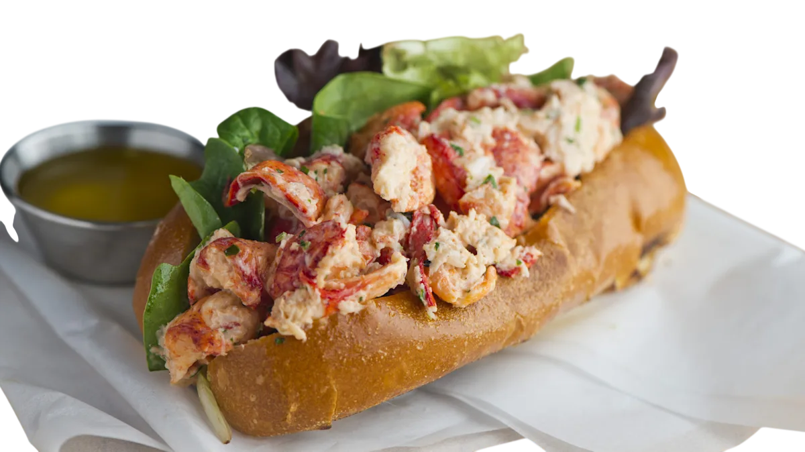

Homer Lobster
— это ресторанная сеть, которая специализируется на блюдах с лобстером и другими морепродуктами
Она представлена в разных странах, включая США
Происхождение
Сеть была основана Мойше Шефезом в Париже. Он обучался в США, где и вдохновился идеей создания идеального лобстер-ролла.
Признание в США
В 2018 году Homer Lobster выиграл чемпионат мира по приготовлению лобстер-роллов (Lobster Roll World Cup), который проходил в Портленде, штат Мэн. Это событие сделало бренд знаменитым на мировом уровне.
Кстати
Меню
Специализируется на лобстер-роллах на домашней булочке бриошь
Предлагаются классические версии («Коннектикут» с теплым маслом и «Мэн» с майонезом).

«Коннектикут» с теплым маслом

«Мэн» с майонезом
Если вы ищете оригинальный Homer Lobster, вам придется посетить Европу или Дубай. Если же ваша цель — попробовать аутентичный лобстер-ролл в США, рекомендуется искать локальные заведения в штатах Мэн, Массачусетс или Коннектикут, которые считаются родиной этого блюда.